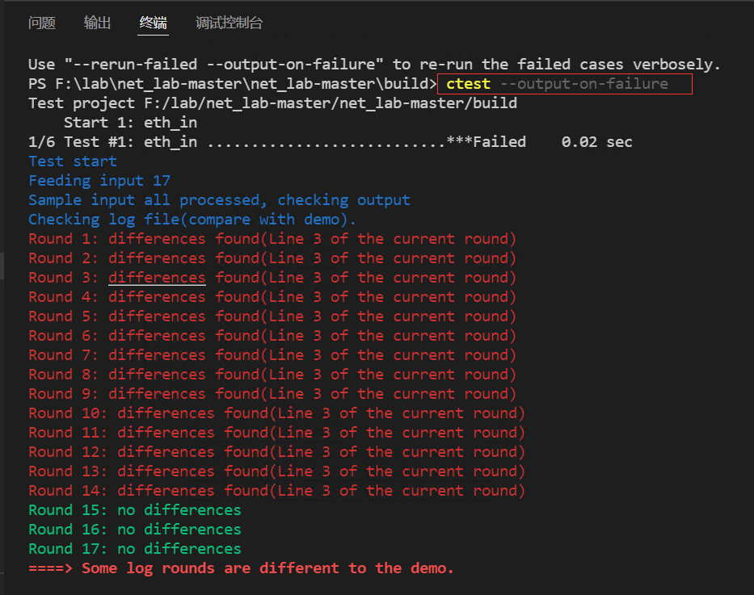
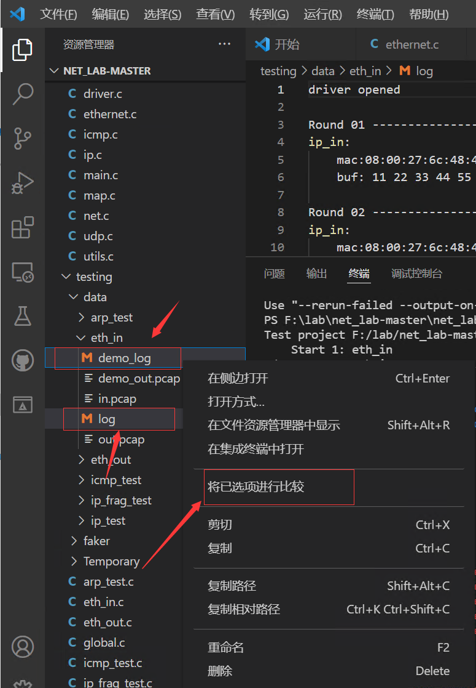

1. 实验目的
熟悉网络协议栈的分层结构，掌握协议栈的数据结构定义；
了解以太网数据包捕获机制，熟悉数据包的收发过程；
熟悉数据链路层数据帧格式，掌握以太网数据帧的发送和接收处理过程。
2. 实验任务
在给定的协议栈代码框架上，编写以太网数据链路层数据帧的发送和接收函数，使其能够发送和接收数据帧，并且能通过实验评测系统的测试。
3. 实验原理
3.1. 协议栈框架简介
3.1.1. 协议栈结构
从本实验开始，我们就要自己动手构建一套自底向上包含但不限于以太网协议、ARP、IP、ICMP、UDP五种协议的网络协议栈。该协议栈基于TCP/IP协议模型，分为数据链路层、网络层、传输层和应用层四层结构，由上到下层层层包装，上层数据包会被下层的包头封装在里面，而下层的包头会在它的一个字段里面说明它上一层封装的是什么协议，封装在里面的原始文件数据是不会改变的。封装发生在发送方，拆封（还原操作）发生在接收方。

由于每一层协议所加入的包头不一样，使得每一层的数据包结构也不一样，那么如何表示能够支持不同协议层的头部添加和移除的数据包结构呢？在实验中，我们提供了如下结构体定义数据包结构，主要代码见inculde/buf.h。
1 typedef struct buf //协议栈的通用数据包buffer, 可以在头部装卸数据，以供协议头的添加和去除
2 {
3 size_t len; // 包中有效数据大小
4 uint8_t *data; // 包的数据起始地址
5 uint8_t payload[BUF_MAX_LEN]; // 最大负载数据量
6 } buf_t;
7
8 int buf_init(buf_t *buf, size_t len); //初始化buffer为给定的长度，用于装载数据包
9 int buf_add_header(buf_t *buf, size_t len); //为buffer在头部增加一段长度，用于添加协议头
10 int buf_remove_header(buf_t *buf, size_t len); //为buffer在头部减少一段长度，去除协议头
11 int buf_add_padding(buf_t *buf, size_t len); //为buffer在尾部添加一段长度，填充0
12 int buf_remove_padding(buf_t *buf, size_t len); //为buffer在尾部减少一段长度，去除填充
为简化协议栈的实现，我们只要求能够满足单线程使用即可，故只需为本协议栈创建一个接收和一个发送的缓冲区就行，主要代码见inculde/net.c。
1/**
2 * @brief 网卡接收和发送缓冲区
3 *
4 */
5buf_t rxbuf, txbuf; //一个buf足够单线程使用
在buf_init()函数中，将buf->len设置为初始长度，buf->data指向payload空间长度为BUF_MAX_LEN的一半的地址。因此，将在这一空间的上半地址用于添加有效数据，下半地址用于添加填充pad。
注意
请思考，什么情况下需要在数据data后面填充0？

定义好的数据结构后，添加TCP/IP协议栈各层包头的过程只需要前移data指针，而移除包头的过程只需要后移data指针即可。
3.1.2. 网络数据包大端与小端
通过大学前两年的学习，相信同学们对大端小端的名词由来，已经有了一定的认识。大小端字节序在表示存储的字节顺序是有区别的。小端字节序：低字节存储于内存低地址，高字节存储于内存高地址。大端字节序：高字节存储于内存低地址，低字节存储于内存高地址。long 型数据 0x12345678，在小端字节序和大端字节序的存储方式：
地址 |
数据 |
|---|---|
0x0000 0100 |
0x78 |
0x0000 0101 |
0x56 |
0x0000 0102 |
0x34 |
0x0000 0103 |
0x12 |
地址 |
数据 |
|---|---|
0x0000 0100 |
0x12 |
0x0000 0101 |
0x34 |
0x0000 0102 |
0x56 |
0x0000 0103 |
0x78 |
网络上传输的数据都是字节流，对于一个多字节数值，在进行网络传输的时候，先传递哪个字节？按照TCP/IP协议规定：网络字节序是大端字节序。但是，X86平台上是以小端字节序存储，也就是，在发送之前我们需要将小端存储的字节序转换成大端法存储的数值，而在接收时，也需要将大端序转成小端序存放的数值。
在实验代码中，我们提供了16bit（2个字节）的大小端转换宏定义：
1#define swap16(x) ((((x)&0xFF) << 8) | (((x) >> 8) & 0xFF)) //为16位数据交换大小端
3.1.3. 结构体内部字段对齐问题
结构体对齐问题也是老生常谈的话题，那么，为什么要对齐？主要是时间和空间上的一个权衡。大多数体系结构都是按照字长来对齐访问数据的。struct是一种复合数据类型，其构成元素既可以是基本数据类型（如int、long、float等）的变量，也可以是一些复合数据类型（如array、struct、union等）的数据单元。缺省情况下，编译器为结构体的每个成员按其自然对界（natural alignment）条件分配空间以提高运算效率。各个成员按照他们被声明的顺序在内存中顺序存储，第一个成员的地址和整个结构的地址相同。自然对界（natural alignment）即默认对齐方式，是按结构体的成员中size最大的成员对齐。

网络传输是字节流传输，但是当发生结构体对齐时，编译器会自动加入填充字节，这样发送出去的字节流某些字段会指向错误的地方，因此，在实验中，我们需要禁用结构体内部字段的对齐。
在实验代码中，可以使用伪指令pack(n)，编译器将按照n个字节对齐。注意：如果指定的n大于结构体最大成员的size，则其不起作用，结构体仍然按照size最大的成员进行对齐。
1#pragma pack(1) // 编译器将按照1个字节对齐
2
3 typedef struct ether_hdr
4 {
5 uint8_t dst[NET_MAC_LEN]; // 目标mac地址
6 uint8_t src[NET_MAC_LEN]; // 源mac地址
7 uint16_t protocol16; // 协议/长度
8 } ether_hdr_t;
9 #pragma pack() // 取消自定义字节对齐方式
3.1.4. Map的使用
本实验框架使用万能的指针操作编写了支持泛型的键值对容器，支持超时时间与非平凡值类型，另外也提供了简单的get、set、delete、foreach原语，同时，利用map实现协议动态注册机制，使得上下层协议解耦，编写底层协议时上层协议可以不存在，希望能简化大家的编码。主要代码见inculde/map.h、src/map.c。
1 typedef void (*map_constuctor_t)(void *dst, const void *src, size_t len);
2 typedef void (*map_entry_handler_t)(void *key, void *value, time_t *timestamp);
3
4 typedef struct map //协议栈的通用泛型map，即键值对的容器，支持超时时间与非平凡值类型
5 {
6 size_t key_len; //键的长度
7 size_t value_len; //值的长度
8 size_t size; //当前大小
9 size_t max_size; //最大容量
10 time_t timeout; //超时时间，0为永不超时
11 map_constuctor_t value_constuctor; //形如memcpy的值构造函数，用于拷贝非平凡数据结构到容器中，如buf_copy
12 uint8_t data[MAP_MAX_LEN]; //数据
13 } map_t;
其中，data用于存储key、value和time。time是插入key-value键值对的时间值，用于判断是否该键值对是否超时。

备注
本协议栈中需要处理的协议或数据不算多，map可以采用遍历方式查找。需要注意的是，如果是要实现大数据量的快速检索，可以采用平衡二叉树数据结构或是hash map，具体实现方式可查阅STL标准模板库。
3.2. 以太网数据包捕获机制
从上一个实验可知，以太网数据包常规的传输路径依次为网卡、设备驱动层、操作系统内置的网络协议栈，网络协议栈包含有数据链路层、IP 层、传输层、应用层。那么，在不修改设备驱动层和操作系统内置的协议栈的情况下，如何获取到来自设备驱动层的数据帧呢？
值得庆幸的是，现代操作系统一般提供有用于捕获网络流程的pcap（packet capture）应用程序编程接口。类Unix的系统主要是在libpcap库中实现pcap，Linux下著名的tcpdump就是以它为基础，而Windows系统则是使用WinPcap的libpcap端口，其官方网站是https://www.winpcap.org/。Libpcap利用BSD Packet Filter(BPF)算法对网卡接收到的链路层数据包进行过滤。BPF算法的基本思想是在有BPF监听的网络中，网卡驱动将接收到的数据包复制一份交给BPF过滤器，过滤器根据用户定义的规则决定是否接收此数据包以及需要拷贝该数据包的那些内容，然后将过滤后的数据给与过滤器相关联的上层应用程序。数据包复制的过程类似于在数据链路层增加一个旁路处理，因此，包捕获机制并不影响操作系统对数据包的网络栈处理，用户只需要调用简单的若干函数就能获得所期望的数据包。

常用到的抓包函数：
pcap_open_live()：用于打开网络设备，并且返回用于捕获网络数据包的数据包捕获描述字。对于此网络设备的操作都要基于此网络设备描述字。
pcap_lookupnet()：获得指定网络设备的网络号和掩码。
pcap_compile()：用于将用户制定的过滤策略编译到过滤程序中。
pcap_setfilter()：用于设置过滤器。
pcap_next_ex()：用来捕获数据包。
pcap_close()：用于关闭网络设备，释放资源。
在本实验中，我们已经对pcap库函数进行底层封装，我们直接使用以下几个函数即可实现从网卡接收或发送数据包，详见include/dirver.h、src/dirver.c。
/**
* @brief 打开网卡
*
* @return int 成功为0，失败为-1
*/
int driver_open();
/**
* @brief 试图从网卡接收数据包
*
* @param buf 收到的数据包
* @return int 数据包的长度，未收到为0，错误为-1
*/
int driver_recv(buf_t *buf);
/**
* @brief 使用网卡发送一个数据包
*
* @param buf 要发送的数据包
* @return int 成功为0，失败为-1
*/
int driver_send(buf_t *buf);
/**
* @brief 关闭网卡
*
*/
void driver_close();
3.3. 以太网数据帧格式
从上一节的介绍中，我们可知利用driver_recv()函数可以接收到以太网数据链路层的数据帧，那么数据帧的格式是什么样的？
来自物理线路的二进制数据包称作一个帧。以太网链路传输的数据帧称为以太帧，或者以太网数据帧。

提示
如上图所示，物理层用于完成二进制数列与信号的转换，转换方法取决于设备本身的配置，没有固定的协议。物理层因其与其他层的性质不同，有时被当作数据链路层的一部分看待，有时被认为不属于TCP/IP的层。在本实验中，不涉及到物理层的实现。

上图中每个字段的含义如下表所示：
目的地址 : 接收帧的网络适配器的物理地址（MAC 地址），为 6 个字节（48 比特）。作用是当网卡接收到一个数据帧时，首先会检查该帧的目的地址，是否与当前适配器的物理地址相同，如果相同，就会进一步处理；如果不同，则直接丢弃。
源地址 : 发送帧的网络适配器的物理地址（MAC 地址），为 6 个字节（48 比特）。
长度/类型 ：当该值在0x05DC（10进制数为1500）以下时，表示该以太网数据帧的长度；在0x0600以上时，则表示上层协议的类型，2个字节，标识数据交付哪个协议处理。例如，字段为0x0800时，表示将数据交付给IP协议。字段为0806时，表示该数据帧时ARP请求/应答报文。
数据 : 也称为效载荷，表示交付给上层的数据。以太网帧数据长度最小为 46 字节，最大为 1500 字节。如果不足 46 字节时，会填充到最小长度。最大值也叫最大传输单元（MTU）。
4. 代码实现与检测
请同学们认真阅读本实验提供的代码框架，并补充完整 src/ethernet.c 文件中的 ethernet_out()函数和ethernet_in()函数。
4.1. 以太网数据帧发送处理流程（ethernet_out()函数）
Step1 ：首先判断数据长度，如果不足46则显式填充0，填充可以调用buf_add_padding()函数来实现。
Step2 ：调用buf_add_header()函数添加以太网包头。
可参考以下写法：
buf_add_header(buf, sizeof(ether_hdr_t));
ether_hdr_t *hdr = (ether_hdr_t *)buf->data;
Step3 ：填写目的MAC地址。
Step4 ：填写源MAC地址，即本机的MAC地址。
Step5 ：填写协议类型 protocol。
Step6 ：调用驱动层封装好的driver_send()发送函数，将添加了以太网包头的数据帧发送到驱动层。
4.2. 以太网数据帧接收处理流程（ethernet_in()函数）
Step1 ：首先判断数据长度，如果数据长度小于以太网头部长度，则认为数据包不完整，丢弃不处理。
Step2 ：调用buf_remove_header()函数移除加以太网包头。
Step3 ：调用net_in()函数向上层传递数据包。
4.3. 实验自测
我们实验提供了自测程序，方便同学们对每一层的协议进行自测。
首先请参考附录B Windows开发环境搭建 搭建Windows的开发环境，或者，也可以参考附录B Linux开发环境搭建 搭建Linux的开发环境。
下面以Windows开发环境为例，介绍如何进行实验自测。Linux开发环境下也可以用VSCode远程调试，完成实验自测，其操作步骤是类似的，在此就不一一赘述了。
点击CMake工具栏，找到eth_in[eth_in.exe]，右键，选择“生成”进行编译。

接着，打开VSCode的终端，到build目录下，输入ctest -R eth_in

如果显示100% test passed（如上图所示），则说明ethernet_in()函数的接收处理流程是正确的。否则，说明接收处理失败。

如上图所示，提示测试有错误。
此时，可以输入ctest –output-on-failure显示未通过测试的控制台输出，该命令会运行所有测试。
{kind=link}
提示
ctest用法
ctest ： 运行所有测试
ctest -N ： 列出所有测试
ctest -R 测试名 ： 运行指定测试
ctest -R 测试名 -V ： 运行指定程序，并显示测试控制台输出
ctest –output-on-failure ： 运行所有测试，仅显示未通过测试的控制台输出
ctest -N -V ： 列出测试及其运行命令（用于gdb）
从上图可以看到在eth_in测试中，提示”Some log rounds are different to the demo“。
接着，我们可以查看一下是哪些log不一样。在VSCode工程目录下，将testing/eth_in目录下的demo_log和log这两个文件进行比对。
按下Ctrl键，选择demo_log和log这两个文件，再点击右键，选择“将已选项进行比较”
{kind=link}
如下图所示，通过对比查看 log 和 demo_log 文件，可以看到 log 文件中数据报头部多出了一些数据（用此方法可以看出 ethernet_in()函数处理错误）

点击CMake工具栏，找到eth_out[eth_out.exe]，右键，选择“生成”进行编译。

与上述eth_in的测试一样，打开VSCode的终端，到build目录下，输入ctest -R eth_out即可进行测试。
如果提示失败，也可以参考上述排错方法来找bug。
5. 实验提交
本实验提交 实验设计报告 和 实验代码 。提交方法请参考实验一。
5.1. 实验设计报告
实验设计报告要求写出实验设计思路和运行结果 。
实验设计报告会纳入评分（虽然不多），有分数追求的大佬（juanwang）们不要只放代码和指导书的截图。
5.2. 实验代码
不需要提交整个实验代码包，只需 提交你所修改过的代码 即可。